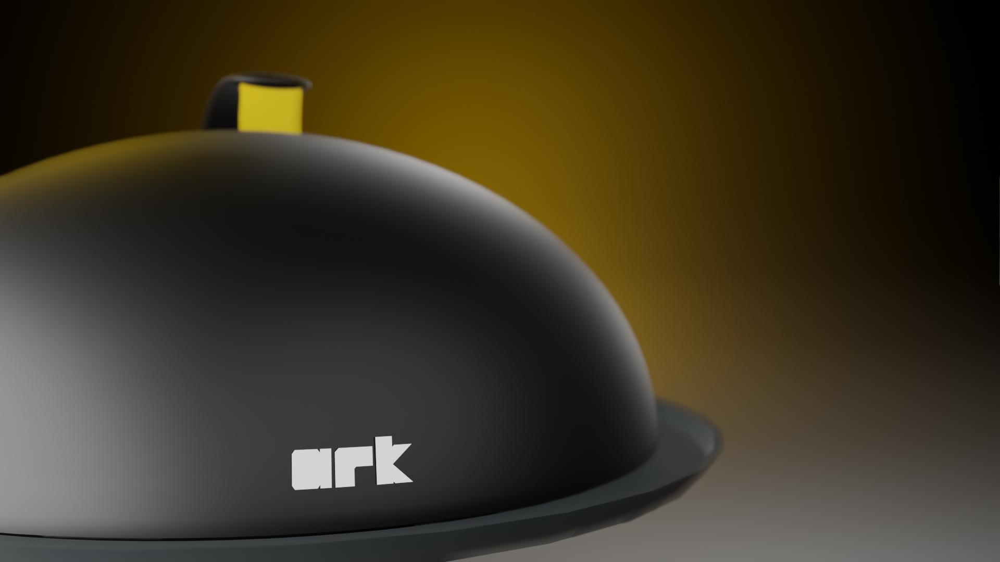

ARKLid is an assistive kitchen device designed to aid vision impaired persons
in the task of roasting foods in home kitchens.
Role
UX Researcher and Designer
Team
Individual
Research Methods
Semistructured Interviews, Video Analysis, Card Sorting, Process Mapping
Design Tools
Blender, Arduino
Duration
January 2020 - June 2020
Guide
Prof. Swati Pal IDC School of Design, IIT Bombay

Why
Preparing a meal is basic activity needed for survival. It involved a range of sensory organs
to work with each other for a desirable outcome. Many decisions taken when preparing a meal are
heavily sight dependent. Ability to prepare a meal has direct implication on the quality of
life of the individual, with research indicating lowered nutrition levels among the vision
impaired, due to their lowered ability to shop for and prepare meals independently. Roasting,
being an activity that is used to prepare many staples of the Indian cuisine involves a large
amount of risk, but also has the potential to greatly impact and enable persons with vision
impairments to lead independent lives.
What
The process of roasting foods was investigated. The process was broken down into multiple
subtasks, and those subtasks that were sight dependent were identified as problem areas and
solutions were brainstormed. The task of placing food on the heated pan, and flipping of the
food to roast the other side were two major tasks that were dangerous for vision impaired
persons to attempt. When potential solutions for the same got complicated, the process of
roasting was revisited. The task of roasting both sides by flipping the food back onto the
pan was eliminated and instead solutions to provide heat from both sides were brainstormed and
combined with solutions for placing food on the pan to create the final solution.
How
ARKLid was designed to aid with the process of roasting foods, with the bottom of the
food heated from an existing cook-top and the top of the food heated with the thermoelectric
generators passing heat through a hot-plate. The lid is designed to work with a standard 28cm
diameter pan, by clamping on to the handle. The lid’s handle has tactile DC Vibration motors
that provide haptic feedback to aid in recognising the centre of the pan and in letting the
user know of the heating status. The heat supplied is controlled by a sliding potentiometer
placed next to the handle, with tactile and haptic cues informing the user about the amount
of heat being supplied via the hotplate. When the lid is not being used for roasting foods,
a pair of ultrasonic sensors let the user navigate to the centre of the pan with the motor’s
vibrational intensity varying to help guide the user.


 back
back